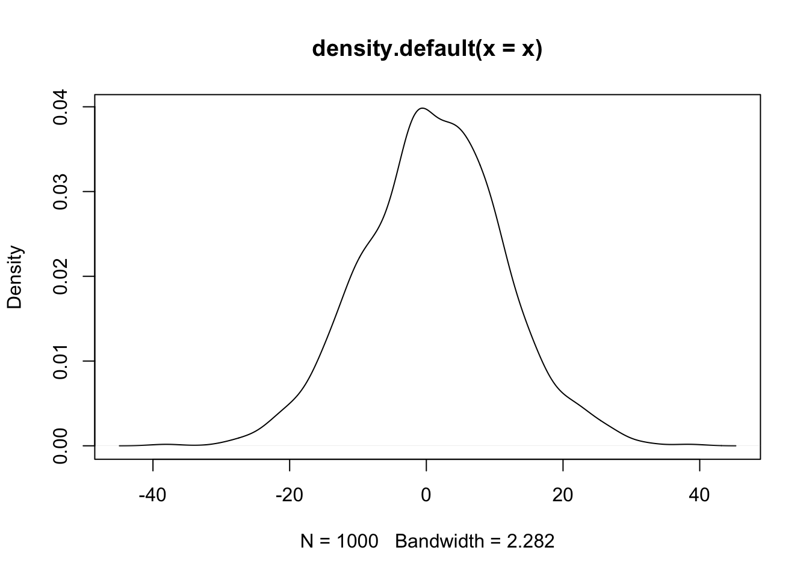
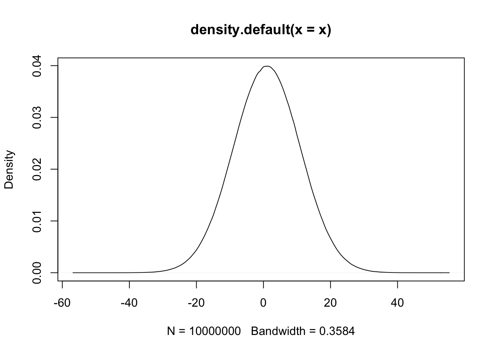

Chapter 3 Vector
Notes
在這一章節與下一章節data.frame，你會學到vector、factor、matrix、list與data.frame這些「資料型態」
* vector就它當是google或Excel試算表的一欄，就是一個變項或稱變數（variable）。
* data.frame要特別費心去看，因為通常我們看到的一個google sheet或一個EXCEL sheet就相當一個data.frame。data.frame其實相當於是「list of vector」的組成。
* factor和matrix就先自己看看，還沒碰到統計或者大量的數值資料時，暫時不會用到這兩種變數型態。matrix比較常在網絡資料或者文字資料等需要操作大型矩陣的時候會用。
有些資料型態非常雷同（例如matrix或data.frame都是將資料儲存為欄列型態的二維資料），但學習過程你要特別注意，不同的資料型態之間有什麼差異？ * matrix和data.frame有什麼差？ * factor和vector有什麼差？ * data.frame和list有什麼差？
每一個資料型態有什麼操作 * 產生（creating）：怎麼新建一個這個資料型態？ * 選取（selecting columns）：我可不可以只要這幾項？ * 合併（merging or concatenating）：兩個這種資料型態可不可以疊在一起？ * 刪除（deleting, truncating）：怎麼把某一個或某幾個刪掉（要先選）？ * 轉換（type converting）：可不可以轉成另一種型態？
在這邊我們使用各縣市平均每月薪資所得以及各縣市人口數兩筆範例資料來做練習。
3.1 Vector的基本操作
3.1.1 建立Vector
在程式碼中，只要是文字必用成對的雙引號或單引號包含其中，以區隔「變數」和「數字」。例如如果看到沒有雙引號的「英文字母」必定是變數名稱，或函式名稱。如果看到有雙引號的數字，那也是文字。
income <- c(70100, 51300, 51100, 48400, 47600, 43000)
county <- c("台北", "新北", "桃園", "高雄", "台中", "台南")
population <- c(2.6, 3.9, 2.2, 2.7, 2.8, 1.8)
area <- c(271.8, 2052.5, 1221, 2951.9, 2214.9, 2191.7)- 用
seq()建立一個連續而規律的vector。例如seq(11, 99, 11)的意思是，從11到99，每隔11取一個。 - 用
a:b建立一個從a到b的連續整數。例如1:10會產生從1到10的十個數字。
## [1] 11 22 33 44 55 66 77 88 99## [1] 11 12 13 14 15 16 17 18 19 20- 產生一群符合某種分配的數列。例如
runif()是指uniform分配，rnorm()是指常態分配；rnorm(1000, 1, 10)指的是產生1000個從1~10之間的數。



3.1.2 查看Vector的內容
預覽、印出Vector的內容。在R裡面不用特別用print()來印出一個變數的內容。他像是matlab一樣，只要直接打出該變數的名稱，就代表要把其內容列印出來。
## [1] "台北" "新北" "桃園" "高雄" "台中" "台南"## [1] 70100 51300 51100 48400 47600 43000## [1] "台北" "新北" "桃園" "高雄" "台中" "台南"## [1] "台北" "新北" "桃園" "高雄" "台中" "台南"## [1] 6用View()檢視資料。你可以用View(county)將county的內容呈現在RStudio的預覽視窗上，是RStudio的使用者很常用的作法。
3.1.3 取出Vector部分內容: Subsetting, filtering
It is important to know how to neglect first n or last n elements. For example, a[1:(length(a)-2)] will neglect the last two elements. Thinking why I need parentheses for length(a)-2 here.
## [1] "台北" "新北" "桃園" "高雄" "台中" "台南"## [1] "台中" "桃園" "台北"## [1] "桃園" "高雄" "台中" "台南"## [1] 13 14 15 16 17 18 19## [1] 19 18 17 16 15 14 133.1.4 Deleting
Without assignment, deletion won’t change original vectors
## [1] 11 12 16 17 18 19 20## [1] 12 14 16 17 18 19 20## [1] 11 12 13 14 15 16 17 18 19 20Correct deleting operations with assignment to replace original vector
## [1] 11 12 16 17 18 19 20## [1] 22 44 66 77 88 993.1.5 Concatinating
Concatinating is quite useful for web crawling when you crawl article links page by page. You may be not sure the number of page you need to crawl. So you need to append entire new vector to old vector. It is concatinating. (“Appending” often means adding one new element at the end of data.)
## [1] 1 2 3 4 5 6 7 8 9 10 11## [1] 11 12 16 17 18 19 20## [1] 1 2 3 4 5 6 7 8 9 10 11 11 12 16 17 18 19 20## [1] 1 2 3 4 5 6 7 8 9 10 11 11 12 16 17 18 19 20 1 2 3 4 5 6 7
## [26] 8 9 10 11 11 12 16 17 18 19 20 11 12 16 17 18 19 203.2 Vector的運算
3.2.1 Arithmetic operations
## [1] 14 15 16 17 18 19 20 21 22## [1] 5.5 6.0 6.5 7.0 7.5 8.0 8.5 9.0 9.5## [1] 1 0 1 0 1 0 1 0 1## [1] 5 6 6 7 7 8 8 9 9## [1] FALSE TRUE FALSE TRUE FALSE TRUE FALSE TRUE FALSE## [1] TRUE FALSE TRUE FALSE TRUE FALSE TRUE FALSE TRUE## [1] 12 14 16 18## [1] 11 13 15 17 193.2.2 Logic comparisons
## [1] TRUE TRUE TRUE TRUE TRUE TRUE TRUE TRUE TRUE## [1] FALSE FALSE FALSE FALSE FALSE FALSE FALSE FALSE FALSE## [1] 0 0 0 0 0 0 0 0 0## Warning in a > b: longer object length is not a multiple of shorter object
## length## [1] FALSE FALSE FALSE FALSE FALSE FALSE FALSE FALSE FALSE## [1] TRUE FALSE FALSE FALSE FALSE FALSE## [1] TRUE## [1] TRUE## [1] FALSE## [1] FALSE3.2.3 Subsetting by logic comparisons
two methods to filter data from vectors, by index vector or a logical vector with equal length.
## [1] 11 33 55## [1] 11 33 55## [1] 1 0 1 0 1## [1] TRUE FALSE TRUE FALSE TRUE## [1] "你好棒棒" "你真的好棒"## [1] 11 33 55## [1] 1 3 53.2.4 Sorting and ordering
sort(x)的結果必須用<-覆蓋原本的x，此時的x才算被排序的結果。order(x)函式會傳回x數值由小到大的索引。這個例子的結果是5, 4, 3, 6, 1, 2，也就是5位置的那個數最小、4那個位置的數次小、接下來3, 6, 1, 2。x[order(x)]把order(x)結果（也就是c(5, 4, 3, 6, 1, 2)）傳給原本的x便會使得原本的x重新排序。通常order()的用途是，我們可以將兩個等長的variables例如var1和var2，依據var2來重新排序var1，例如var1[order(var2)]。
## [1] 4 13 22 24 33 55## [1] 1 2 3 4 5 6## [1] 4 13 22 24 33 553.2.5 Built-in math functions
## [1] 11## [1] 19## [1] 15## [1] 15## [1] 2.738613## [1] 3.459432 3.584963 3.700440 3.807355 3.906891 4.000000 4.087463 4.169925
## [9] 4.247928## [1] 2.484907 2.564949 2.639057 2.708050 2.772589 2.833213 2.890372 2.944439
## [9] 2.9957323.3 Data types
3.3.1 Checking data type
## [1] "character"## [1] "numeric"## [1] "logical"## [1] "character"3.3.2 Converting data type
- numeric vector可以用
as.character(x)轉成charcter；logical vector可以用as.numeric(x)轉為numeric。概念上可以說是character > numeric > logical。 - 如果硬是在logical vector後附加一個numeric element的話，那就會整個vector被轉為numeric vector；相仿地，如果numeric vector後附加一個character element的話那整個vector就會被轉為character vector。
- 可以用
sum()函式來計算logical vector有幾個TRUE值。例如sum(a%%2==1)就是計算a中有幾個奇數。TRUE可視為1、FALSE可視為0，所以加總起來就是TRUE有幾個。
income.c <- as.character(income)
population.c <- as.numeric(population)
a <- seq(11, 99, 11)
a <- c(a, "100")
a <- seq(11, 99, 11)
sum(a%%2==1)## [1] 53.4 Character operations
3.4.1 Character operations
## [1] "A 11" "A 22" "A 33" "A 44" "A 55"## [1] "A11" "A22" "A33" "A44" "A55"